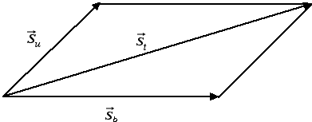
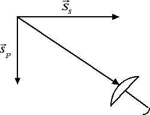

Forze e vettori
Regola del parallelogramma
Un'altra regola con cui si sommano i vettori in fisica quando hanno lo stesso punto di applicazione (ossia la stessa coda) è la cosiddetta regola del parallelogramma. Supponiamo che un uomo si sposti in maniera obliqua su una barca, che a sua volta si sposta orizzontalmente rispetto alla riva di un fiume. Qual è lo spostamento totale dell'uomo rispetto alla riva? È chiaro che entrambi i vettori spostamento vanno applicati allo stesso punto (l'uomo che si sta muovendo):

Lo spostamento totale dell'uomo rispetto alla riva è dato dalla diagonale del parallelogramma che ha per lati lo spostamento dell'uomo (u) rispetto alla barca e lo spostamento della barca (b) rispetto alla riva. Per la particolare costruzione geometrica adottata questa regola per sommare due vettori va anche sotto il nome di regola del parallelogramma.
Prima di procedere, notiamo come l'uomo sia stato modellizzato con un punto materiale. Questa è una idealizzazione che useremo spesso: un corpo esteso dotato di massa verrà visto come un punto materiale nel quale possiamo pensare concentrata tutta la massa del corpo. Questo punto prende anche il nome di baricentro del corpo. Se il corpo ha forma regolare il baricentro coincide con il suo centro di simmetria: ad esempio, il baricentro di una sfera omogenea coincide con il centro della sfera.
Perché, quando camminiamo sotto la pioggia, dobbiamo tenere l'ombrello inclinato in avanti per non bagnarci? La risposta sta proprio nel modo in cui si sommano i vettori. Infatti, le gocce di pioggia (p) si spostano verticalmente rispetto al suolo a causa della loro forza-peso. Se l'uomo si sposta rispetto al suolo orizzontalmente da destra a sinistra, è come se il suolo (s) si muovesse rispetto all'uomo orizzontalmente da sinistra a destra. Sommando i due vettori abbiamo che la pioggia rispetto al viandante cade in maniera obliqua e l'ombrello va inclinato in avanti.

Per concludere questa sezione ricordiamo qual è la regola per moltiplicare un numero per un vettore. Supponiamo di moltiplicare un vettore di intensità s per un numero k positivo. Otterremo un vettore che ha stessa direzione e stesso verso e per intensità k · s. Se invece moltiplichiamo il vettore per un numero k negativo avremo un vettore con la stessa direzione, intensità k · s e verso opposto. In particolare due vettori si dicono opposti quando hanno stessa direzione, stessa intensità ma verso opposto. I vettori opposti sono importanti per il calcolo della differenza di due vettori: infatti la differenza di due vettori si definisce come la somma del primo vettore e dell'opposto del secondo vettore.